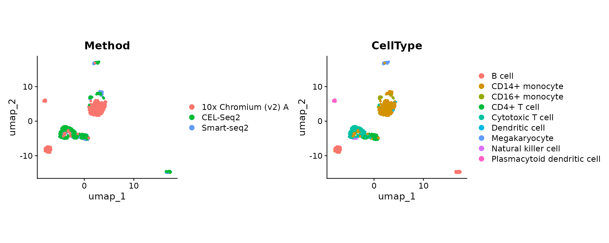
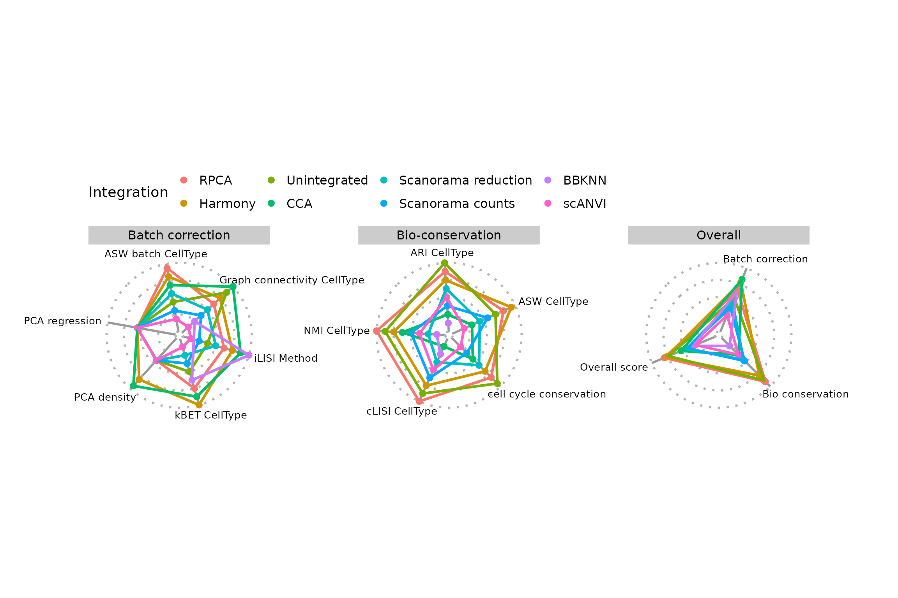

Install and load the data
We will use the pbmcsca dataset available from the
package SeuratData.
# install `SeuratData` package (if not yet)
if (! requireNamespace("SeuratData", quietly = TRUE)) {
devtools::install_github('satijalab/seurat-data')
}
# increase download timeout and install the dataset
options(timeout = 300)
SeuratData::InstallData('pbmcsca')
# load the dataset (take 1,000 first cells to speed-up execution)
seu <- SeuratData::LoadData('pbmcsca')[,1:1e3]## Warning: Assay RNA changing from Assay to Assay## Warning: Assay RNA changing from Assay to Assay5Inspect the dataset
Have a look at the metadata:
# rmarkdown::paged_table -> prints data frames in a less ugly way than default
rmarkdown::paged_table(head(seu[[]], n = 10))The column Method provides information about the
single-cell technology used to acquire each cell’s trancriptome. We
consider it as the batch of origin.
table(seu$Method)##
## 10x Chromium (v2) A CEL-Seq2 Smart-seq2
## 494 253 253The column CellType contains cell-types annotation that
we will use later on.
rmarkdown::paged_table(as.data.frame(table(seu$CellType)))Let’s now define the batch variable and the cell-type variable(s):
batch.var <- 'Method' # available in the metadata of the object
cell.var <- 'CellType' # available in the metadata of the objectSeurat data processing - Standard workflow
The current Seurat object is not split, meaning that each layer contains cells from all batches.
## Layers before split: counts, dataWe select the column Method to separate the cells into
batch-specific layers. This step is indispensable to run integration
methods and enables to normalise each batch (i.e. layer)
independently.
seu[['RNA']] <- split(seu[['RNA']], f = seu$Method)
cat('Layers after split:', paste(Layers(seu), collapse = ", "), '\n')## Layers after split: counts.Smart-seq2, counts.CEL-Seq2, counts.10x_Chromium_v2_A, data.Smart-seq2, data.CEL-Seq2, data.10x_Chromium_v2_AThen, we proceed to the standard Seurat workflow until
we obtain the PCA reduction.
seu <- SCTransform(seu)
seu <- RunPCA(seu, verbose = F)
seu <- FindNeighbors(seu, reduction = "pca", dims = 1:30, k.param = 20L)We now further process the object until we can visualise the dispersion of cells on a UMAP dimension reduction.
seu <- FindClusters(seu, graph.name = 'SCT_snn', resolution = .5)
seu <- RunUMAP(seu, dims = 1:30, reduction = 'pca')## Modularity Optimizer version 1.3.0 by Ludo Waltman and Nees Jan van Eck
##
## Number of nodes: 1000
## Number of edges: 43784
##
## Running Louvain algorithm...
## Maximum modularity in 10 random starts: 0.8717
## Number of communities: 8
## Elapsed time: 0 seconds
DimPlot(seu, label = T) + NoLegend() + ggplot2::coord_fixed(ratio = .7)Let’s colour cells according to batch and cell-type label.
DimPlot(seu, group.by = batch.var) +
DimPlot(seu, group.by = cell.var) & ggplot2::coord_fixed(ratio = .7)
Albeit moderately, the dispersion of cells on the UMAP seems to be influenced by a batch effect. According to the “CellType” variable, B cells from 10x and CEL-Seq2 are not gathered together and monocyte cells do not fully overlap.
Now, we want to correct these technical differences.
Integrate batches - SeuratIntegrate workflow
The integration commands are to some extent similar to the Seurat
V5 vignette. The purpose of this package is to extend the set of
available integration methods. See the bottom of
?IntegrateLayers to have a comprehensive list of relevant
methods.
Many methods supported by SeuratIntegrate are implemented in Python,
and the wrappers provided rely on the reticulate package
and conda environments. If you are not familiar with the
CondaEnvManager, have a look at the
vignette("setup_and_tips").
Here are some important considerations before performing an integration:
- use the interface
DoIntegrate()from SeuratIntegrate to integrate the cell batches (see the next section) - check the method-specific arguments
(e.g.
?bbknnIntegration) - set up conda environments to use Python-based methods:
- with the
CondaEnvManagerviaUpdateEnvCache()(check thevignette("setup_and_tips")) - with a custom conda environment by passing its path - or its name -
to the
conda_envparameter. This overrides the default behaviour by loading the specified environment instead of fetching theCondaEnvManager’s cache.
- with the
Some methods expect a raw count matrix, others expect the scaled counts of the variable features, etc. To help you with the choice, look at the table below
| Method | Layer | Features |
|---|---|---|
| ComBat | data | any but better with restricted number of features (e.g. variable) |
| Harmony | N/A (PCA reduction) | N/A (PCA reduction) |
| MNN | data | any but better with restricted number of features (e.g. variable) |
| bbknn | N/A (PCA reduction) | N/A (PCA reduction) |
| scVI / scANVI | counts | all |
| Scanorama | counts or data | any |
| trVAE |
data (recon loss “mse”) counts (otherwise) |
all |
Layers:
- counts: raw counts
- data: normalised counts
- scale.data: scaled normalised counts of variable features
/!\ IMPORTANT /!\ To use
all features when calling an integration method with
IntegrateLayers():
IntegrateLayers(object, features = Features(object), scale.layer = NULL).
Does not work for a SCTAssay.
DoIntegrate philosophy (#do_integrate)
The function DoIntegrate() is a very handy way to run
multiple integrations in a single command. Note that:
-
...is the place to specify the integration commands to run. - integration commands are expected to be function
calls, i.e. of the form
FooIntegration(),BarIntegration(), etc. - Calls accept method-specific argument (e.g.
FooIntegration(layers = "data")) -
use.hvg = TRUEresults in using variable features -
use.future = TRUEis useful to run Python-based methods (a normal R session cannot load more than one conda instance, whilefutureenables to launch background sessions, preventing the main on to load any conda environment.). It is highly recommended to set it toFALSEfor R-based methods.
Most integration methods can be used without modifying default parameters. In this vignette, we will change some arguments to meet our needs. Notably, we will change the number of cores allocated to each method (where possible).
ncores <- parallel::detectCores() - 2In this vignette, we are going to use 3 Python-based methods, namely BBKNN, Scanorama and scANVI from the scvi-tools suite. Let’s make sure they are available straight away:
# BBKNN
if (! isValid(getCache()$bbknn)) {
UpdateEnvCache("bbknn")
}
# Scanorama
if (! isValid(getCache()$scanorama)) {
UpdateEnvCache("scanorama")
}
# scvi-tools
if (! isValid(getCache()$scanvi)) {
UpdateEnvCache("scanvi")
}
Let’s proceed to a few batch-effect corrections:
Integration part 1) Using R-based methods
seu <- DoIntegrate(
object = seu,
SeuratIntegrate::HarmonyIntegration(orig = "pca", dims = 1:30,
ncores = ncores),
CCAIntegration(orig = "pca", dims = 1:30 , new.reduction = "cca.integrated",
normalization.method = "SCT"),
RPCAIntegration(orig = "pca", dims = 1:30, new.reduction = "rpca.integrated",
normalization.method = "SCT"),
use.future = FALSE # R-based
)## Integration 1 in 3: integrating using 'SeuratIntegrate::HarmonyIntegration'
## Integration 2 in 3: integrating using 'CCAIntegration'
## Integration 3 in 3: integrating using 'RPCAIntegration'Note: We use SeuratIntegrate:: before
HarmonyIntegration to avoid any confusion with
Seurat::HarmonyIntegration().
Integration part 2) Using python-based methods
seu <- DoIntegrate(
object = seu,
bbknnIntegration(orig = "pca", layers = "data", ndims = 30),
ScanoramaIntegration(orig = "pca", ncores = ncores),
scANVIIntegration(groups = seu[[]], groups.name = "Method",
labels.name = "CellType", layers = "counts",
torch.intraop.threads = ncores,
torch.interop.threads = ncores,
max_epochs = 20L),
use.future = TRUE, # Python-based
use.hvg = c(TRUE, TRUE, FALSE)
)## Integration 1 in 3: integrating using 'bbknnIntegration'
## Modularity Optimizer version 1.3.0 by Ludo Waltman and Nees Jan van Eck
##
## Number of nodes: 1000
## Number of edges: 6848
##
## Running Louvain algorithm...
## Maximum modularity in 10 random starts: 0.6753
## Number of communities: 10
## Elapsed time: 0 seconds
## Integration 2 in 3: integrating using 'ScanoramaIntegration'
## Integration 3 in 3: integrating using 'scANVIIntegration'Note: set
max_epochs = 20LforscANVIIntegrationis only to save time ! The default number of epochs (400) results in a superior integration.
If we take a look at our Seurat object, we can note that it has been enriched with many objects:
print(seu)## An object of class Seurat
## 69594 features across 1000 samples within 4 assays
## Active assay: SCT (16450 features, 3000 variable features)
## 3 layers present: counts, data, scale.data
## 3 other assays present: RNA, bbknn.ridge, scanorama.reconstructed
## 8 dimensional reductions calculated: pca, umap, harmony, cca.integrated, rpca.integrated, pca.bbknn, integrated.scanorama, integrated.scANVI
cat("Graph objects:", paste(Graphs(seu), collapse = ", "), "\n")
cat("Neighbor objects:", paste(Neighbors(seu), collapse = ", "), "\n")
cat("Reduction dimensions:", paste(Reductions(seu), collapse = ", "), "\n")
cat("Assays:", paste(Assays(seu), collapse = ", "), "\n")## Graph objects: SCT_nn, SCT_snn, bbknn_scale.data_connectivities, bbknn_scale.data_distances, bbknn_ridge.residuals_connectivities, bbknn_ridge.residuals_distances
## Neighbor objects:
## Reduction dimensions: pca, umap, harmony, cca.integrated, rpca.integrated, pca.bbknn, integrated.scanorama, integrated.scANVI
## Assays: RNA, SCT, bbknn.ridge, scanorama.reconstructedGreat! We have successfully performed several integrations! However, stopping here would be unsatisfactory because we still need to process each integration’s output(s) to obtain at least one UMAP projection for each. Here, we will also aim at generating assessable representations to score.
Score integrations
Process outputs
Several objects can be produced by each integration algorithm, namely a layer in a new assay (i.e. corrected counts), a dimension reduction (corrected embedding), or a knn network. Some even produce more than one output (for instance Scanorama produces corrected counts and a dimension reduction).
The type of output is important to consider, because scoring metrics are not compatible with all output types. The simplest strategy is to process each output separately in order to obtain at least a PCA out of it, or even a knn graph (essential to compute clusters). Note that most scores cannot be computed on knn graphs, hence knn graph outputs (e.g. BBKNN) can only be evaluated by a reduced set of metrics.
Below is a summary of post-processing steps for each output type (bracketed steps are not always necessary):
- corrected counts: [
ScaleData()] ->RunPCA()-> [FindNeighbors()->FindOptimalClusters()] - dimension reduction: [
RunPCA()] -> [FindNeighbors()->FindOptimalClusters()] - knn graph: [
FindOptimalClusters()]
RunPCA() is sometimes run even on dimension reduction
objects (within scoring functions) because some scores require a
variance associated with each dimension.
Let’s process all the outputs. Here, we will go through all the steps
for a more exhaustive demonstration. However, it is to be noted that
skipping the final step FindOptimalClusters() makes the
neighbour graph computation step (FindNeighbors())
unnecessary. In such a case however, one will forgo two scoring metrics,
namely ARI and NMI.
Here, we will use SymmetrizeKnn() between
FindNeighbors() and FindOptimalClusters()
because we set return.neighbor = TRUE in
FindNeighbors(). This is useful to keep the distances
between cells in the KNN graph rather than what
FindNeighbors() does by default, which is converting the
KNN graph to an adjacency matrix with 0/1s and to a
SNN network with values bounded between 0 and 1. This not
compulsory, but this is used to stay in line with BBKNN’s output. To
prevent the community detection algorithm to output a high fraction of
singletons, we “symmetrize” the matrix which makes the graph
“undirected”.
# corrected counts outputs
DefaultAssay(seu) <- "scanorama.reconstructed"
seu <- ScaleData(seu)
seu <- RunPCA(seu, npcs = 50L, reduction.name = "pca.scanorama_counts")
seu <- FindNeighbors(seu, reduction = "pca.scanorama_counts", dims = 1:30, return.neighbor = TRUE,
graph.name = "knn.scanorama_counts")
seu <- SymmetrizeKnn(seu, graph.name = "knn.scanorama_counts")
seu <- FindOptimalClusters(seu, graph.name = "knn.scanorama_counts_symmetric",
cluster.name = "scanorama_counts_{cell.var}_{metric}",
cell.var = cell.var,
optimisation.metric = c("nmi", "ari")) # default, compute both
# dimension reduction outputs
DefaultAssay(seu) <- "SCT"
seu <- FindNeighbors(seu, reduction = "pca", dims = 1:30, k.param = 20L,
return.neighbor = TRUE, graph.name = "knn.unintegrated")
seu <- SymmetrizeKnn(seu, graph.name = "knn.unintegrated")
seu <- FindOptimalClusters(seu, graph.name = "knn.unintegrated_symmetric",
cluster.name = "unintegrated_{cell.var}_{metric}",
cell.var = cell.var)
seu <- FindNeighbors(seu, reduction = "integrated.scanorama", dims = 1:30,
return.neighbor = TRUE, graph.name = "knn.scanorama_reduction")
seu <- SymmetrizeKnn(seu, graph.name = "knn.scanorama_reduction")
seu <- FindOptimalClusters(seu, graph.name = "knn.scanorama_reduction_symmetric",
cluster.name = "scanorama_reduction_{cell.var}_{metric}",
cell.var = cell.var)
seu <- FindNeighbors(seu, reduction = "harmony", dims = 1:30,
return.neighbor = TRUE, graph.name = "knn.harmony")
seu <- SymmetrizeKnn(seu, graph.name = "knn.harmony")
seu <- FindOptimalClusters(seu, graph.name = "knn.harmony_symmetric", cell.var = cell.var,
cluster.name = "harmony_{cell.var}_{metric}")
seu <- FindNeighbors(seu, reduction = "cca.integrated", dims = 1:30,
return.neighbor = TRUE, graph.name = "knn.cca")
seu <- SymmetrizeKnn(seu, graph.name = "knn.cca")
seu <- FindOptimalClusters(seu, graph.name = "knn.cca_symmetric", cell.var = cell.var,
cluster.name = "cca_{cell.var}_{metric}")
seu <- FindNeighbors(seu, reduction = "rpca.integrated", dims = 1:30,
return.neighbor = TRUE, graph.name = "knn.rpca")
seu <- SymmetrizeKnn(seu, graph.name = "knn.rpca")
seu <- FindOptimalClusters(seu, graph.name = "knn.rpca_symmetric", cell.var = cell.var,
cluster.name = "rpca_{cell.var}_{metric}")
seu <- FindNeighbors(seu, reduction = "integrated.scANVI",
return.neighbor = TRUE, graph.name = "knn.scanvi")
seu <- SymmetrizeKnn(seu, graph.name = "knn.scanvi")
seu <- FindOptimalClusters(seu, graph.name = "knn.scanvi_symmetric", cell.var = cell.var,
cluster.name = "scanvi_{cell.var}_{metric}")
# graph outputs
seu <- SymmetrizeKnn(seu, graph.name = "bbknn_ridge.residuals_distances")
seu <- FindOptimalClusters(seu, graph.name = "bbknn_ridge.residuals_distances_symmetric",
cell.var = cell.var, cluster.name = "bbknn_{cell.var}_{metric}")Note: Instead of sticking with the default
FindNeighbors(return.neighbors = FALSE)at the beginning, we could have switched it toTRUEright away, process theKNNgraph withSymmetrizeKnn()and use it for subsequent steps (umap, clustering, etc.)
FindOptimalClusters() adds metadata columns with the
clustering results that maximized a metric (NMI or ARI) to the Seurat
object:
rmarkdown::paged_table(seu[[]][1:10, grep("CellType_[arinm]{3}$", colnames(seu[[]]))])Add scores to the Seurat object
Now that we have computed objects ready to be scored, we will proceed
with assessing each integration output. For this step, one can either
use Score[score_name]() and save scores in separate
variables or use AddScore[score_name]() to directly store
scores within the Seurat object. The latter is far more convenient and
allows to compare scores graphically. This is the strategy we are going
to adopt here.
Last but not least, a cell-type variable is used in most scores, hence it is highly recommended to have an estimate of each cell’s type (or produce such an estimate) stored in the Seurat object as a column in the metadata.
Note that if one doesn’t have a variable with cell-labels (used as ground truth in multiple scores) he will have to produce it or do without several scores. Alternatively, one can use automatic cell annotation algorithms (e.g. the Azimuth package). One can also have multiple cell label variables (e.g. Azimuth typically returns as many cell label variables as levels of annotations contained in the reference). Scores requiring cell type annotations always accept multiple column names.
There is a risk of confusion between cell annotations when using automatic cell annotation tools. Furthermore, in the case of using Azimuth to annotate cells, there is a specific risk of biasing results by favouring RPCA integration because Azimuth uses RPCA to integrate the query dataset onto the reference.
First of all, let’s organise outputs in lists:
reductions <- list(
unintegrated = "pca",
scanorama_counts = "pca.scanorama_counts",
scanorama_reduction = "integrated.scanorama",
harmony = "harmony",
cca = "cca.integrated",
rpca = "rpca.integrated",
scanvi = "integrated.scANVI",
bbknn = NULL
)
graphs <- list(
unintegrated = "knn.unintegrated_symmetric",
scanorama_counts = "knn.scanorama_counts_symmetric",
scanorama_reduction = "knn.scanorama_reduction_symmetric",
harmony = "knn.harmony_symmetric",
cca = "knn.cca_symmetric",
rpca = "knn.rpca_symmetric",
scanvi = "knn.scanvi_symmetric",
bbknn = "bbknn_ridge.residuals_distances_symmetric"
)
integrations <- names(reductions)Let’s finalise our preparations: :
- Make sure you have the kBET package installed to
run
ScoreKBET() - To benefit from a faster implementation of the lisi algorithm, install the lisi package
- To benefit from a faster implementation of the euclidean distance computation, install the distances package
- To run
ScoreRegressPC.CellCycle()(score of cell cycle conservation), runCellCycleScoringPerBatch()beforehand (next chunk)
seu <- CellCycleScoringPerBatch(seu, batch.var = batch.var,
s.features = cc.genes$s.genes,
g2m.features = cc.genes$g2m.genes)Let’s now loop through the integration outputs:
for (integ in integrations) {
reduc <- reductions[[integ]]
graph <- graphs[[integ]]
clust.var.ari <- paste(integ, cell.var, "ari", sep = "_") # produced by `FindOptimalClusters()`
clust.var.nmi <- paste(integ, cell.var, "nmi", sep = "_") # produced by `FindOptimalClusters()`
if (! is.null(reduc)) { # all TRUE except bbknn
seu <- AddScoreASW(seu, integration = integ, cell.var = cell.var,
what = reduc, dist.package = "distances")
seu <- AddScoreASWBatch(seu, integration = integ, batch.var = batch.var,
cell.var = cell.var, what = reduc,
dist.package = "distances")
seu <- AddScoreDensityPC(seu, integration = integ, batch.var = batch.var,
reduction = reduc)
seu <- AddScoreRegressPC(seu, integration = integ, batch.var = batch.var,
reduction = reduc)
seu <- AddScoreRegressPC.CellCycle(seu, integration = integ,
batch.var = batch.var, what = reduc,
compute.cc = FALSE) # because CellCycleScoringPerBatch was ran before
}
seu <- AddScoreARI(seu, integration = integ, cell.var = cell.var,
clust.var = clust.var.ari)
seu <- AddScoreNMI(seu, integration = integ, cell.var = cell.var,
clust.var = clust.var.nmi)
seu <- AddScoreConnectivity(seu, integration = integ, graph.name = graph,
cell.var = cell.var)
seu <- AddScoreKBET(seu, integration = integ, batch.var = batch.var,
cell.var = cell.var, what = reduc %||% sub("_symmetric$", "", graph),
graph.type = "distances", verbose = FALSE)
seu <- AddScoreLISI(seu, integration = integ, batch.var = batch.var,
cell.var = cell.var, reduction = reduc,
graph.name = if (is.null(reduc)) sub("_symmetric$", "", graph) else NULL,
graph.type = "distances", ncores = ncores)
}Now that we have computed multiple scores, we can look at them using
IntegrationScores():
rmarkdown::paged_table(IntegrationScores(seu))Compare the integrations
Note that those scores are raw. Let’s scale them (and make them comparable):
seu <- ScaleScores(seu)Once again, we can print them:
rmarkdown::paged_table(IntegrationScores(seu, scaled = TRUE))To readily compare the integrations, let’s plot the scores:
PlotScores(seu)One might notice a difference in scale for some of the scores, if comparing the plot with the table just before. This is the case for the PCA density score for instance.
print(sort(IntegrationScores(seu, scaled = TRUE)$PCA.density))## [1] 0.00000000 0.00000000 0.00000000 0.00000000 0.00000000 0.06046605 0.12517481Indeed, PlotScores() rescales the scores using min-max
normalisation by default (rescale = TRUE). One might chose
to disable it:
PlotScores(seu, rescale = FALSE)We notice that PCA based methods output very low scores in this case. Since they cannot be computed on knn graphs, scores are biased in favour of BBKNN. You can exclude some scores (and recompute overall scores on the fly)
PlotScores(seu, rescale = FALSE, exclude.score = c("pca.density", "pca.regression"))You can chose a different type of plot (radar or
lollipop):
library(ggplot2)
PlotScores(seu, plot.type = "radar") +
# reduce overlap between axis names and figures
theme(legend.position = "top", panel.spacing = unit(3, "cm"),
plot.margin = margin(r = 3, l = 3, unit = "cm"),
axis.text.x = element_text(size = 10))## Warning: Removed 5 rows containing missing values or values outside the scale range
## (`geom_point()`).
In this last plot, we also exclude the non-integrated dataset. Since
the rescale argument is true by default, the scores are
rescaled without the excluded integration’s scores.
PlotScores(seu, plot.type = "lollipop",
exclude.integration = "unintegrated")## Warning: Removed 5 rows containing missing values or values outside the scale range
## (`geom_point()`).## Warning: Removed 5 rows containing missing values or values outside the scale range
## (`geom_errorbarh()`).We want to compare the UMAP embeddings. For this, we first compute the dimension reductions:
for (integ in integrations) {
reduc <- reductions[[integ]]
if (! is.null(reduc)) { # all except BBKNN
seu <- RunUMAP(seu, dims = 1:min(30, ncol(seu[[reduc]])), reduction = reduc,
reduction.name = paste0(integ, ".umap"))
}
}As BBKNN’s output is a graph, we need to use the umap Python package:
if (! reticulate::condaenv_exists('umap_0.5.4')) {
reticulate::conda_create('umap_0.5.4', packages = 'umap-learn=0.5.4')
}
library(future)
plan(multisession)
seu %<-% {
reticulate::use_condaenv('umap_0.5.4')
RunUMAP(seu, graph = "bbknn_ridge.residuals_connectivities", umap.method = "umap-learn",
n.epochs = 200L, reduction.name = "bbknn.umap") }
seu## Warning: UNRELIABLE VALUE: Future (<unnamed-51>) unexpectedly generated random
## numbers without specifying argument 'seed'. There is a risk that those random
## numbers are not statistically sound and the overall results might be invalid.
## To fix this, specify 'seed=TRUE'. This ensures that proper, parallel-safe
## random numbers are produced. To disable this check, use 'seed=NULL', or set
## option 'future.rng.onMisuse' to "ignore".
plan(sequential)
library(ggplot2)
plot_list <- sapply(integrations, function(integ) {
DimPlot(seu, reduction = paste0(integ, ".umap"), group.by = batch.var) +
ggtitle(integ) +
theme(axis.title = element_blank())
}, simplify = FALSE)
patchwork::wrap_plots(plot_list, guides = "collect")
library(ggplot2)
plot_list <- sapply(integrations, function(integ) {
DimPlot(seu, reduction = paste0(integ, ".umap"), group.by = cell.var) +
ggtitle(integ) +
theme(axis.title = element_blank())
}, simplify = FALSE)
patchwork::wrap_plots(plot_list, guides = "collect")There are several observations to be made here, that require further explanations:
- some cells seem to be assigned a wrong label in
CellType, highlighting the importance of having cell annotations of sufficient quality to be considered suitable as ground truth (which is actually not the case here) - All scaled PCA regression scores are set to zero. This is because
the unintegrated dataset has the lowest raw PCA regression score. It is
very likely the consequence of the
SCTnormalisation, which is much more efficient at masking batch-specific differences than the classicalLogNorm. Thus, the inter-batch differences are not driving the principal components. -
ScaleScores()produce scores that can have different scales (as long asrescale = FALSE) . Thus, min-max rescaling is used by default inPlotScores(), to balance each score’s contribution to the overall scores. This is especially suited for comparing a large number of integrations. However, it has some drawbacks: it can heavily distort the scale of scores when their maximum or minimum are far from 1 or 0 respectively (e.g. all cLISI scores are above 0.9). Hence, the final decision on whether to use min-max rescaling is left to the user’s discretion.
Session info
## R version 4.5.1 (2025-06-13)
## Platform: x86_64-pc-linux-gnu
## Running under: Ubuntu 24.04.3 LTS
##
## Matrix products: default
## BLAS: /usr/lib/x86_64-linux-gnu/openblas-pthread/libblas.so.3
## LAPACK: /usr/lib/x86_64-linux-gnu/openblas-pthread/libopenblasp-r0.3.26.so; LAPACK version 3.12.0
##
## locale:
## [1] LC_CTYPE=C.UTF-8 LC_NUMERIC=C LC_TIME=C.UTF-8
## [4] LC_COLLATE=C.UTF-8 LC_MONETARY=C.UTF-8 LC_MESSAGES=C.UTF-8
## [7] LC_PAPER=C.UTF-8 LC_NAME=C LC_ADDRESS=C
## [10] LC_TELEPHONE=C LC_MEASUREMENT=C.UTF-8 LC_IDENTIFICATION=C
##
## time zone: UTC
## tzcode source: system (glibc)
##
## attached base packages:
## [1] stats graphics grDevices utils datasets methods base
##
## other attached packages:
## [1] ggplot2_3.5.2 future_1.67.0 SeuratIntegrate_0.4.1
## [4] Seurat_5.3.0 SeuratObject_5.2.0 sp_2.2-0
##
## loaded via a namespace (and not attached):
## [1] RcppAnnoy_0.0.22 splines_4.5.1
## [3] later_1.4.4 batchelor_1.24.0
## [5] tibble_3.3.0 polyclip_1.10-7
## [7] XML_3.99-0.19 fastDummies_1.7.5
## [9] lifecycle_1.0.4 edgeR_4.6.3
## [11] globals_0.18.0 lattice_0.22-7
## [13] MASS_7.3-65 backports_1.5.0
## [15] magrittr_2.0.3 limma_3.64.3
## [17] plotly_4.11.0 sass_0.4.10
## [19] rmarkdown_2.29 jquerylib_0.1.4
## [21] yaml_2.3.10 httpuv_1.6.16
## [23] glmGamPoi_1.20.0 sctransform_0.4.2
## [25] spam_2.11-1 spatstat.sparse_3.1-0
## [27] reticulate_1.43.0 DBI_1.2.3
## [29] cowplot_1.2.0 pbapply_1.7-4
## [31] RColorBrewer_1.1-3 ResidualMatrix_1.18.0
## [33] abind_1.4-8 Rtsne_0.17
## [35] GenomicRanges_1.60.0 purrr_1.1.0
## [37] BiocGenerics_0.54.0 tweenr_2.0.3
## [39] rappdirs_0.3.3 sva_3.56.0
## [41] GenomeInfoDbData_1.2.14 IRanges_2.42.0
## [43] S4Vectors_0.46.0 ggrepel_0.9.6
## [45] irlba_2.3.5.1 listenv_0.9.1
## [47] spatstat.utils_3.1-5 genefilter_1.90.0
## [49] pbmcsca.SeuratData_3.0.0 goftest_1.2-3
## [51] RSpectra_0.16-2 spatstat.random_3.4-1
## [53] annotate_1.86.1 fitdistrplus_1.2-4
## [55] parallelly_1.45.1 pkgdown_2.1.3
## [57] DelayedMatrixStats_1.30.0 codetools_0.2-20
## [59] DelayedArray_0.34.1 ggforce_0.5.0
## [61] scuttle_1.18.0 tidyselect_1.2.1
## [63] UCSC.utils_1.4.0 farver_2.1.2
## [65] ScaledMatrix_1.16.0 matrixStats_1.5.0
## [67] stats4_4.5.1 spatstat.explore_3.5-2
## [69] jsonlite_2.0.0 BiocNeighbors_2.2.0
## [71] progressr_0.15.1 ggridges_0.5.7
## [73] survival_3.8-3 systemfonts_1.2.3
## [75] tools_4.5.1 ragg_1.4.0
## [77] ica_1.0-3 Rcpp_1.1.0
## [79] glue_1.8.0 gridExtra_2.3
## [81] SparseArray_1.8.1 mgcv_1.9-3
## [83] xfun_0.53 MatrixGenerics_1.20.0
## [85] GenomeInfoDb_1.44.2 dplyr_1.1.4
## [87] withr_3.0.2 fastmap_1.2.0
## [89] digest_0.6.37 rsvd_1.0.5
## [91] R6_2.6.1 mime_0.13
## [93] textshaping_1.0.2 scattermore_1.2
## [95] tensor_1.5.1 kBET_0.99.6
## [97] RSQLite_2.4.3 spatstat.data_3.1-8
## [99] RhpcBLASctl_0.23-42 tidyr_1.3.1
## [101] generics_0.1.4 data.table_1.17.8
## [103] FNN_1.1.4.1 httr_1.4.7
## [105] htmlwidgets_1.6.4 S4Arrays_1.8.1
## [107] uwot_0.2.3 pkgconfig_2.0.3
## [109] gtable_0.3.6 blob_1.2.4
## [111] lmtest_0.9-40 SingleCellExperiment_1.30.1
## [113] XVector_0.48.0 htmltools_0.5.8.1
## [115] dotCall64_1.2 scales_1.4.0
## [117] Biobase_2.68.0 SeuratData_0.2.2.9002
## [119] png_0.1-8 lisi_1.0
## [121] harmony_1.2.3 spatstat.univar_3.1-4
## [123] knitr_1.50 reshape2_1.4.4
## [125] nlme_3.1-168 cachem_1.1.0
## [127] zoo_1.8-14 stringr_1.5.1
## [129] KernSmooth_2.23-26 parallel_4.5.1
## [131] miniUI_0.1.2 AnnotationDbi_1.70.0
## [133] desc_1.4.3 pillar_1.11.0
## [135] grid_4.5.1 vctrs_0.6.5
## [137] RANN_2.6.2 promises_1.3.3
## [139] BiocSingular_1.24.0 distances_0.1.12
## [141] beachmat_2.24.0 xtable_1.8-4
## [143] cluster_2.1.8.1 evaluate_1.0.5
## [145] locfit_1.5-9.12 cli_3.6.5
## [147] compiler_4.5.1 rlang_1.1.6
## [149] crayon_1.5.3 future.apply_1.20.0
## [151] labeling_0.4.3 plyr_1.8.9
## [153] forcats_1.0.0 fs_1.6.6
## [155] stringi_1.8.7 viridisLite_0.4.2
## [157] deldir_2.0-4 BiocParallel_1.42.1
## [159] Biostrings_2.76.0 lazyeval_0.2.2
## [161] spatstat.geom_3.5-0 Matrix_1.7-3
## [163] RcppHNSW_0.6.0 patchwork_1.3.2
## [165] bit64_4.6.0-1 sparseMatrixStats_1.20.0
## [167] statmod_1.5.0 KEGGREST_1.48.1
## [169] shiny_1.11.1 SummarizedExperiment_1.38.1
## [171] ROCR_1.0-11 memoise_2.0.1
## [173] igraph_2.1.4 broom_1.0.9
## [175] bslib_0.9.0 bit_4.6.0